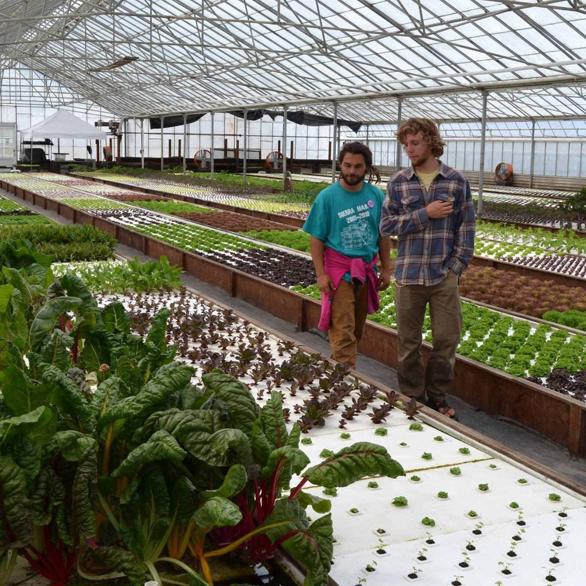
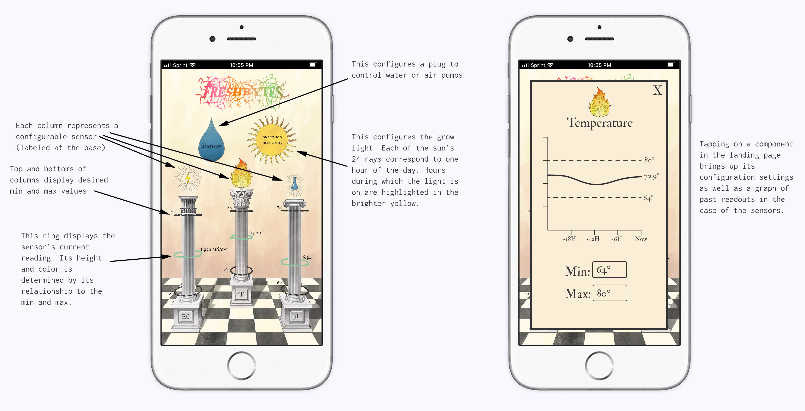

FreshBytes
Monitoring and control system for hydroponic systems

The core of FreshBytes. Accessories and sensors plug in to here.
Hydroponics is a set of techniques for growing plants without the use of any soil. Instead, plant roots are exposed directly to nutrient-enriched water. Using these methods, fresh organic produce can be available year round from nearby greenhouses or indoor farms. These farms can stack trays of hydroponic crops on top of each other, allowing for a much higher yield per acre. They use 90% less water than traditional, soil-grown methods and local production greatly reduces carbon emissions normally associated with transporting and storing crops. The main bottleneck preventing these systems from greater ubiquity is the large, up-front investment they require.
FreshBytes is used in Cal Poly's aquaponics research.
Many consumers and hobbyists, unsatisfied with their current selection of produce or simply wanting to experiment at home, are starting their own miniaturized set-ups. Once up and running, these systems involve a variety of factors that are invisible to the naked eye and greatly contribute to the overall health of the plants. This is where FreshBytes comes in. FreshBytes is a hydroponic monitoring and control system that demystifies the intangibles that arise when farming without soil. It collects all of the measurements that you aren't able to perceive, displays the data in an easily configurable interface, and allows you to control a system's electronic components based on that data. The electrical conductivity of the water measures the amount of nutrients present within it. The water’s pH affects how the plant is able to absorb those nutrients. The correct amount of dissolved oxygen within the water helps regulate the availability of those nutrients as well as stave off anaerobic diseases. The temperature affects the water’s dissolved oxygen and can harm the plant if it’s too high or too low. Freshbytes aggregates all of this info while providing recommendations for healthy ranges of these values. It also has two plugs to control the electronics of your choosing based on the data collected. Some users may wish to control a water pump or set the lights on a timer while others may need a heater for a colder climate. Every hydroponic set-up differs so FreshBytes is designed to be as configurable as possible. The system is designed to scale with ease. The same sensors work just as well in low and high volume production methods, the board can withstand higher amperages than any residential outlet when it comes to controlling other electronics, and the same plugs can control relays for very power intensive, commercial set-ups.

One issue I ran into when designing this project was the availability and durability of high accuracy sensors. Sensors with relatively high precision are orders of magnitude more expensive than their slightly less precise counterparts. They also have shorter lifespans. Most notably, the high accuracy pH sensor probe wears out after about a year and a half of constant use. Commercial users looking to optimize their grow might not be concerned with a consumables cost that is comparatively low to the rest of their operating costs but a home user can’t justify the price of a $150 sensor every 18 months. To accommodate both needs, some basic modularity was built into the system. A durable, affordable sensor can be plugged into the same BNC connector as the high precision one but different hardware is needed to support the two. The manufacturer of the high precision one makes a small breakout board that plugs in easily to a set of headers. I designed boards with matching footprints for the affordable versions of the pH and conductivity sensors. The dissolved oxygen sensor did not have an affordable counterpart available. This modularity allowed me to manufacture a single main board, reducing costs and allowing for upgradeability in the future if some users wish. Simple graphics on the PCB itself mean that users don’t get mixed up when swapping out hardware.
I made a few prototypes throughout FreshBytes’s development and gave them to friends to test out along the way. The first friend received a very rough amalgam of breadboards and hot glue. She had to use a command line interface just to read and configure the device. The second friend got a version much further along in its development. It actually had an enclosure as well as a UI designed in the immediately apprehendable, super flat style that is ubiquitous today. The UI even had all the configurable settings prepopulated with suggested values. After a few months, the friend with the rough prototype had a pretty nice harvest of not just herbs but tomatoes and eggplants as well. The friend with the more polished prototype was struggling to grow some leafy greens. After talking to them both it was clear that the friend with the rough prototype had a higher barrier to entry that caused her to consult some outside resources as well as be more deliberate when tending to her crops.

Sensors read in real time.
With this admittedly anecdotal UX testing I rethought how I wanted users to interact with the front end. I wanted an experience that would draw them in but also encourage outside research. Ultimately I decided on something a little mystical. The UI is filled with occult symbols and drawings but each one functions to display its requisite data and can take the user to a submenu in order to configure their preferences.
As far as technical details go, the hardware is a custom PCB that uses the same processor as a Raspberry Pi and its repository can be found here. It runs a node.js server on Arch Linux that interfaces with the switches and sensors through a mix of Python and Bash scripts. The backend can be found here. The front end is written in p5.js and can be found here .